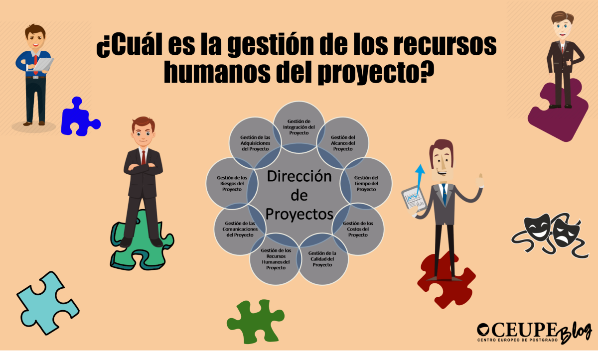

Introducción
El capítulo 9 de la Guía del PMBOK® se enfoca en la gestión de los recursos humanos del proyecto, es decir, en los procesos que organizan, gestionan y conducen al equipo del proyecto. El éxito de un proyecto no solo depende de una buena planificación técnica, sino también de una adecuada gestión del capital humano involucrado.
Procesos Principales
La gestión de los recursos humanos del proyecto incluye cuatro procesos clave:
- Planificar la gestión de recursos humanos: Consiste en identificar y documentar roles, responsabilidades, habilidades requeridas y relaciones jerárquicas. Su resultado principal es el plan de recursos humanos.
- Adquirir el equipo del proyecto: Es el proceso de confirmar la disponibilidad de los recursos humanos y asignarlos al proyecto.
- Desarrollar el equipo del proyecto: Se enfoca en mejorar las competencias, la interacción del equipo y el ambiente general del equipo para mejorar el desempeño del proyecto.
- Dirigir al equipo del proyecto: Implica hacer seguimiento al desempeño de los miembros del equipo, dar retroalimentación, resolver problemas y coordinar los cambios para mejorar el rendimiento.
Roles y Responsabilidades
Es fundamental definir claramente los roles, responsabilidades y relaciones de reporte. Esto se hace a través de herramientas como:
- Organigramas (OBS): Diagramas jerárquicos que muestran la estructura del equipo.
- Matriz de Asignación de Responsabilidades (RAM): Como la matriz RACI, que detalla quién es responsable, quién aprueba, a quién se consulta y a quién se informa.
- Descripción de cargos: Documentos detallados sobre funciones, habilidades requeridas y duración del rol.
Herramientas y Técnicas
Durante el desarrollo del equipo y la dirección del equipo del proyecto, se utilizan herramientas como:
- Evaluaciones de desempeño del equipo.
- Actividades de formación y team building.
- Habilidades interpersonales: Liderazgo, influencia, toma de decisiones, comunicación efectiva y gestión de conflictos.
- Evaluaciones individuales: Retroalimentación formal e informal.
Conclusiones
La correcta gestión de los recursos humanos es clave para lograr un equipo cohesionado, motivado y productivo. Las herramientas descritas en el capítulo 9 de la Guía del PMBOK® permiten al director del proyecto manejar de forma eficaz a las personas, resolver conflictos y mantener el enfoque en los objetivos comunes. Una gestión humana eficiente se traduce en mayor éxito para los proyectos.